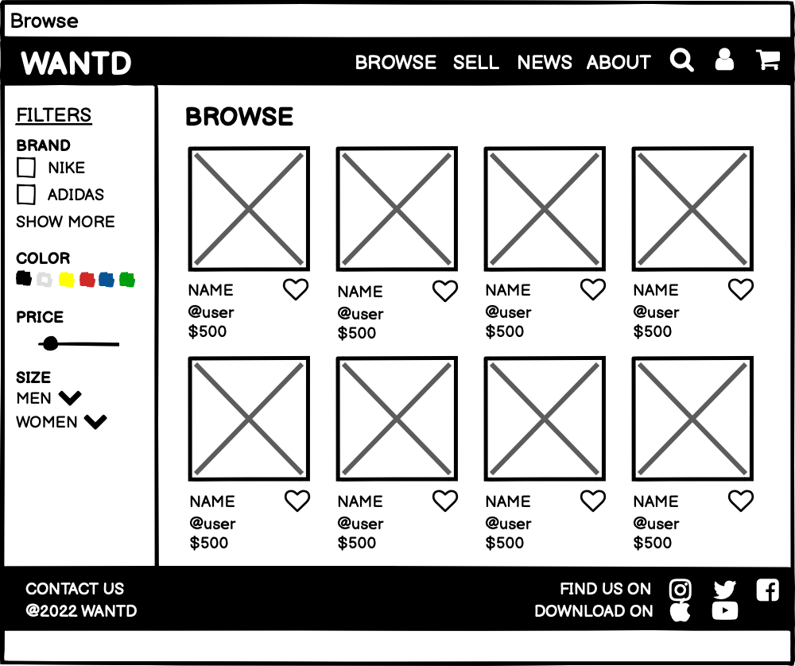
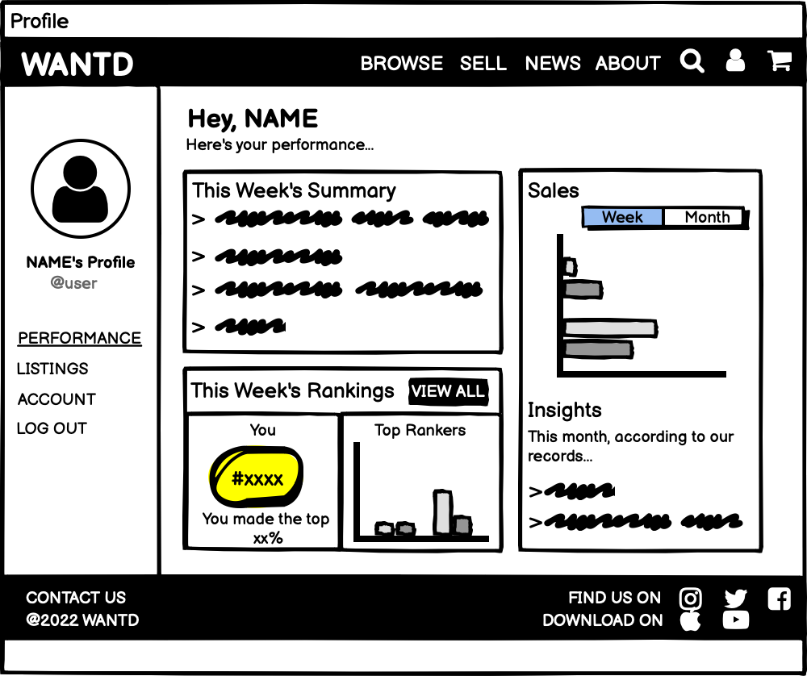

Iterative Design: WANTD
A website design for WANTD, a sneakers buying and reselling platform.
Project Overview
Our aim for this project was to design a user interface for an emerging startup's concept,
using an iterative design process flow - sketching ideas, creating an interactive hi-fi prototype that
incorporates critiques, conducting user testing, and contacting the startup. Working in a group of 4,
we designed an interactive desktop interface for WANTD, a platform for buying and selling trendy sneakers.
1. Selecting a Startup
We chose WANTD, an online sneaker marketplace specifically for sneaker resale. It aims to facilitate fast, efficient resale for resellers and buyers. Its concept includes:
- Virtual storefronts
- Bulk inventory management for resellers, using bulk listing tools
- Live video auctions
We also saw it as a hub for lovers of sneaker culture. The concept interested us - we wanted to see how we could make it feel like a sneaker site as opposed to any e-commerce fashion site.
2. Initial Sketches
Set 1


Set 2


Set 3


Set 4


3. Lo-Fi Wireframes
Home
For Home, we decided to keep it simple - lots of images, minimal text. We included a Trending section for sneaker fanatics and Top Sellers to make things fun. In our menu, we have a news tab help people keep up with sneaker styles and trends.

Login
We included multiple login options to cater to different kinds of users.

Browse
We kept the shopping page visual and clean, with immediately visible filtering options for easier searching. Hearts can be used to 'save' or 'follow' an item.

For viewing specific items, we chose a modal popup instead of redirecting to a new page, so the user can switch in and out easily.
Cart
The cart is simple, focusing on important details. We included relevant navigation options (Continue Shopping, Wishlist, Checkout).

Profile
We designed the profile page to summarize a user's selling 'stats'. The side menu helps navigate to different profile sections. Having rankings gamifies the site a little, adding some fun.

Listings
Including Current Listings and Unlisted allows users to upload items they might want to sell without having to list them immediately (the collection of Unlisted items).
The checkboxes under each item enable bulk listing - the seller can check the items they want and use the buttons to manage all at once (i.e., list many items in one click).

4. Hi-Fi Mockup and Critique
We made an initial hi-fi prototype based on our wireframes, and received critique on the first draft. This table summarizes the critiques we received and how we addressed them in our final hi-fi mockup. (For a visual aid, compare the final mock-up to the lo-fi wireframes!)
| Original Hi-Fi |
Critique |
Final Hi-Fi |
| The image of shoes on the home screen took up the whole screen. |
- Didn't realize there was more content below it.
- Needed some indication that a user can scroll down.
|
Added downwards arrow at the bottom of the image to indicate that users can scroll. |
| Red dot and words 'Live Now' indicated which items currently had a live auction going on (in Browse screen). |
- Users thought that 'Live Now' indicated live listings, not auctions.
- Users wondered why only some items had that tag.
|
- Changed 'Live Now' to 'Live Auction Now'.
- Added a Listing Type filter to emphasize the difference between Live Auction and Buy Now items.
|
| 'Sell' tab in the the header menu led to the Listings page in the user profile. |
- Users expected 'Sell' tab to lead to a 'create listing' page.
- Users felt a step was being skipped by coming directly to the Listings page.
|
- 'Sell' in the header menu now leads to a different page which has buttons for the main actions related to selling - creating and managing listings.
- The Manage Listings in the new Sell page button leads to the Listings page.
|
5. Final Mockup
We incorporated feedback from our critique to create our final mockup. Expand to interact with it in full screen!
6. User Testing
We conducted three user tests. See below for the information we provided our users, as well as the results!
Task
Find a popular sneaker on the online reselling platform and add it to cart so you can purchase it.
Steps needed to accomplish this:
- Log into your account on the website.
- Browse for the desired sneaker.
- Add the sneaker to cart.
Testing Instructions Provided
Imagine that you're a sneakerhead, and you're looking to purchase a popular shoe that you've always wanted on a new online reselling platform.
We would really appreciate it if throughout the process of completing the task, you would think out loud about what your thought process throughout the journey, such as what you're seeing and how easy/difficult it is to complete each task!
Note that this is not an actual website, but rather a mock/prototype of one. This means that while the interface will resemble a webpage, not all the components are clickable. However, following the instructions, you should be able to navigate through the website by clicking on the relevant buttons!
- Log into the website. Assume that your username and password are already filled out.
- Once logged in, browse for the "Jordan 1 Retro High: Dior" shoe.
- Add the shoe to your cart.
Post-Test Questions
- If you could change one thing, how would you improve the site?
- What did you like about the site?
- How likely are you to recommend this site to a friend or colleague (0 = Not at all likely, and 10 = Very likely)?
Results
We have linked videos of the three user tests conducted.